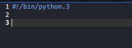

as python is stored in bin folder na so when script is run so terminal gets to know ki pyhton script hai
sys.exit() se u can exit completely from the python script
str.strip() removes all the white space from the start and end
to add new key value pairs to dictionary : use .update({'Jash':[1,2,3]})